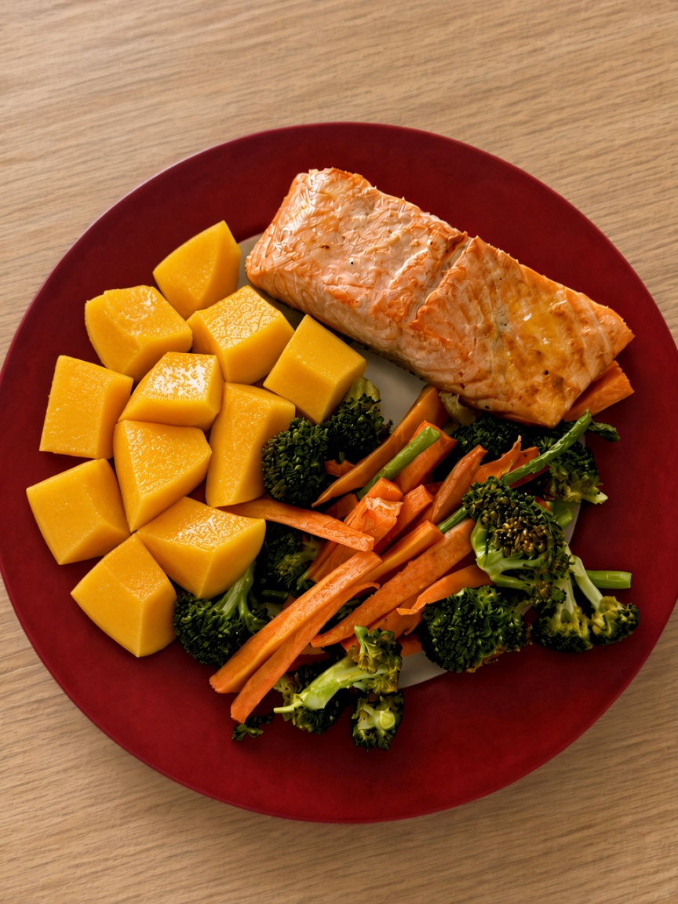

Содержит группу ферментов (амилазы), благодаря которым больше помогает в усвоении сложных углеводов, расщепляя крахмалы.
средний, в день (около 150–200 г мякоти).
Поддерживает микрофлору кишечника за счёт мягкой клетчатки.
При высоком уровне физической активности и большом объёме углеводов в рационе можно съедать до 250–300 г, но из-за высокой сладости манго людям с небольшой массой тела или низкой активностью стоит ограничиться половиной плода.